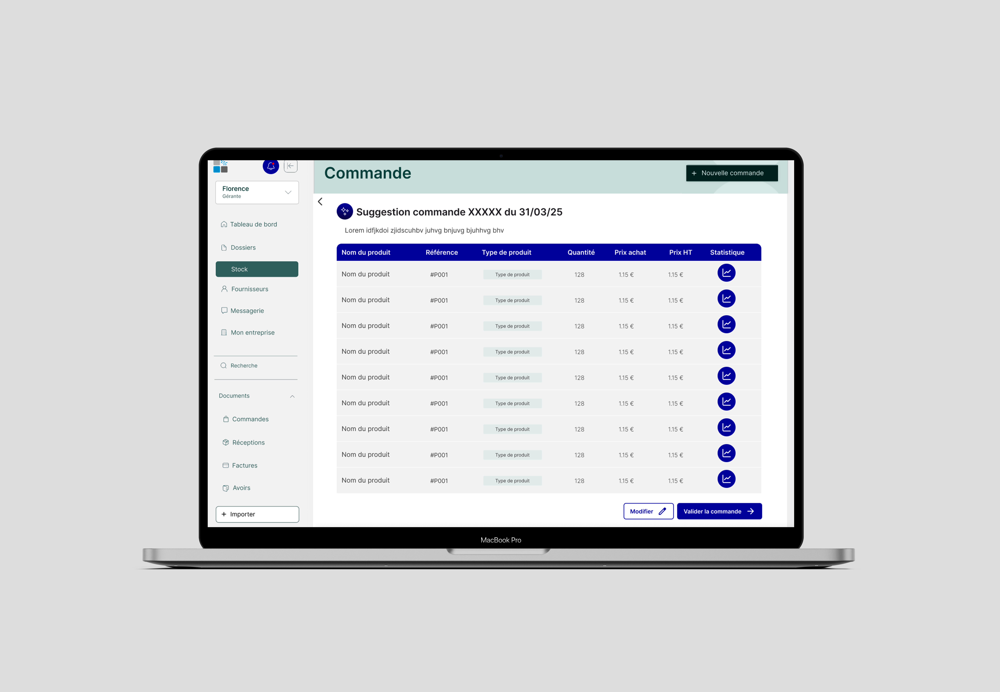
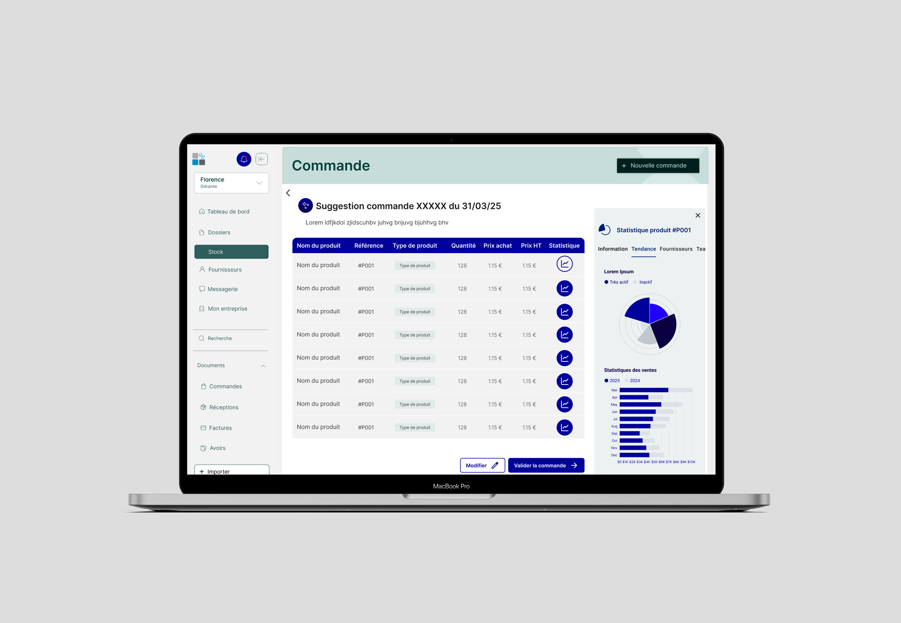
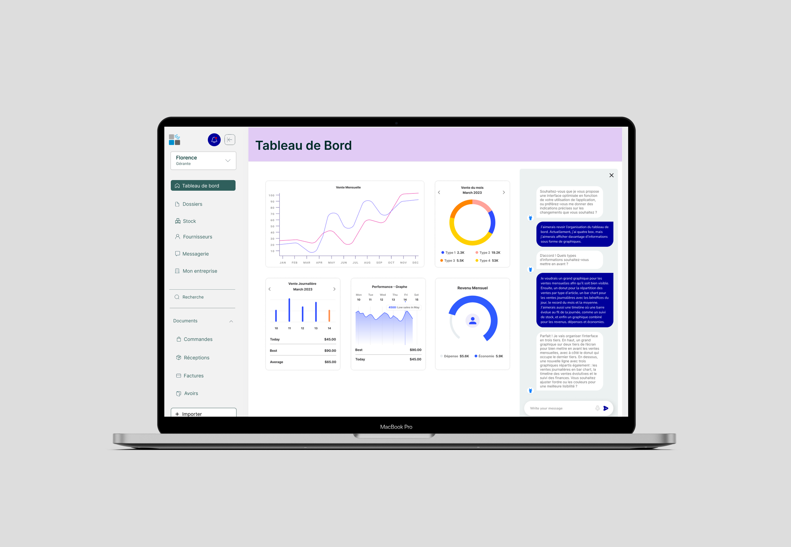
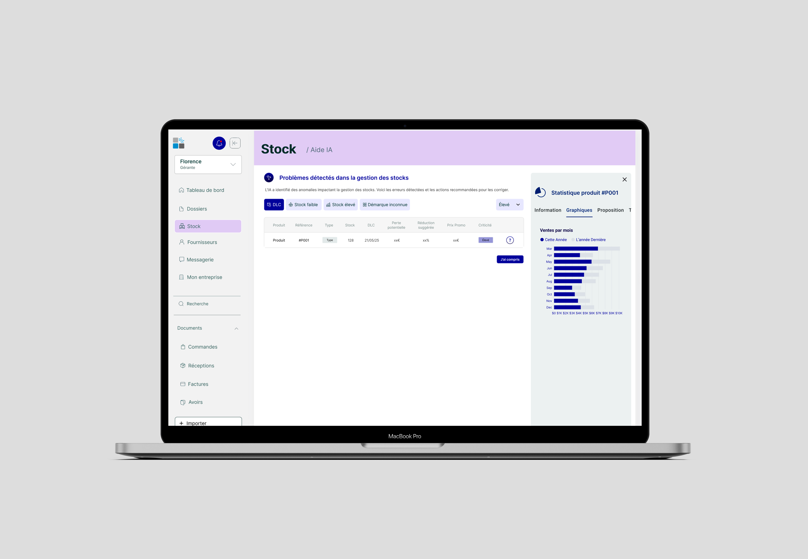

Cegedim
Un Design Sprint au service d'un éditeur de logiciels
Dans le cadre d'un workshop d'une semaine, nous avons eu l'opportunité de travailler sur un projet d'innovation pour Cegedim, éditeur de logiciels à destination d'entreprises privées et publiques, accompagnés par l'agence de design Upgrade.
La mission : proposer 3 concepts concrets pour intégrer l'intelligence artificielle dans Upharma, le logiciel de gestion de pharmacie de Cegedim. En une semaine, nous avons appliqué une méthode proche du Design Sprint pour aller de la recherche à la proposition testable.
La question centrale
" Comment l'IA peut-elle aider les utilisateurs des services Cegedim dans leur prise de décision ou d'actions ? "
L'enjeu n'était pas d'ajouter de l'IA pour le symbole, mais de l'intégrer là où elle crée une valeur réelle pour des professionnels en pharmacie — sans perturber leurs habitudes de travail ni générer de méfiance envers l'outil.
Les défis d'une IA en contexte professionnel
Adoption sans friction
Éviter les réticences face à un outil perçu comme intrusif ou déstabilisant dans un workflow déjà établi.
Multi-profils
Gérant, responsable de rayon, employé saisonnier : des besoins, des compétences et des niveaux d'autonomie très différents.
Contrainte d'une semaine
Produire 3 propositions concrètes, argumentées et présentables au client en 5 jours de travail intensif.
Logiciel métier complexe
Intervenir dans un environnement logiciel dense (stocks, facturation, RH, flux d'achats) avec une IA qui doit rester discrète et non bloquante.
" L'IA ne prend que la place qu'on lui accorde. L'utilisateur reste toujours à l'origine de la décision. "
De la veille à la proposition en une semaine
Veille sur les capacités de l'IA
Nous avons cartographié trois familles d'IA applicables au contexte : prédiction (anticiper les besoins via les données), génération (produire des contenus et analyses), automatisation (réduire les tâches répétitives). Les modes d'interaction retenus : bouton, questionnaire, notifications et rappels — volontairement non intrusifs.
Construction des personas
Trois profils utilisateurs ont guidé l'ensemble du projet :
Gérante, 50 ans
Gérer les commandes, la finance et les litiges. Manque de visibilité sur les besoins futurs en stock.
Resp. de rayon, 33 ans
Suivi des stocks et des promotions. Interface trop rigide, accès limité aux données en temps réel.
Saisonnière, 21 ans
Apprendre vite, s'intégrer malgré un emploi temporaire. Manque de formation et de repères clairs.
Idéation sur 4 domaines
À partir des personas et de la veille, nous avons généré des idées sur quatre périmètres fonctionnels d'Upharma : gestion RH, facturation, stocks, et flux d'achats et ventes. Ces explorations ont convergé vers les 3 axes finaux.
Principe directeur : une IA discrète
Pour s'adresser à un public large de professionnels, l'IA ne prend la forme que de boutons, suggestions ou notifications. L'utilisateur reste toujours à l'origine de l'interaction. Un outil complet et omniscient, mais surtout discret et non bloquant.
3 axes d'intégration de l'IA
Optimisation de la gestion des commandes
Gérer les stocks en évitant les pertes de produits périssables et les ruptures d'approvisionnement.
Détection des problèmes liés au stock, proposition de réductions adaptées à la criticité et suggestions de commandes basées sur les historiques et les tendances du marché.

Pour maintenir la confiance de l'utilisateur, l'IA peut afficher une explication détaillée de son raisonnement sur chaque produit suggéré. Elle partage également les résultats et indicateurs clés pour que l'humain reste juge de la décision finale.

Dashboard personnalisé par l'IA
Chaque employé a des besoins différents. La création de composants personnalisés est manuelle et doit passer par Cegedim.
L'IA propose les éléments les plus pertinents selon le profil, adapte la présentation et intègre un chat pour corriger ou affiner le résultat en temps réel.
La personnalisation de l'interface est disponible dans un chat intégré. Au début de l'interaction, l'IA propose des axes sur lesquels elle peut travailler et suggère une disposition adaptée aux habitudes de l'utilisateur.

Identification des produits à risque et promotions ciblées
Gérer les invendus et les produits périssables avant qu'ils représentent une perte financière pour la pharmacie.
Détection proactive des produits à risque, proposition de réductions adaptées à la criticité et génération de campagnes promotionnelles ciblées avec justification.

Ce que ce projet m'a enseigné
- — Proposer 3 concepts en une semaine oblige à faire des choix rapides et à argumenter chaque décision avec rigueur.
- — L'IA n'est utile que si elle s'efface : l'enjeu était de rendre chaque interaction aussi naturelle qu'un bouton classique.
- — Merci à Cegedim pour leur temps consacré et leur confiance. Et merci à l'équipe d'Upgrade de nous avoir accompagnés et conseillés tout au long de la semaine.